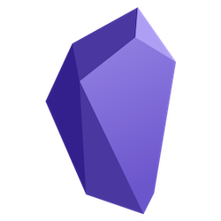

Cuando decido utilizar una aplicación de notas, busco la total compatibilidad con todos los dispositivos en las que voy a utilizarlo. Uno de estos dispositivos es la Raspberry Pi. Que tenga arquitectura ARM, muchas veces complica las cosas, pero este no es el caso de Obsidian.

Afortunadamente cada vez aparecen más paquetes compatibles con arquitectura ARM.
Y lo mejor de Obsidian, es que podemos instalarlo del modo más sencillo, con AppImage.
Descargamos desde un repositorio de la comunidad en GitHub, donde encontraremos la última Releases · obsidianmd/obsidian-releases
Damos permisos de ejecución:
Ejecutamos:
Si tienes un escritorio en x11, como es mi caso, recuerda que puedes arrancar remotamente desde tu raspberry via SSH obsidian.
Yo acostumbro a dejar mis AppImage en un directorio llamado appimage en el directorio home.
También me gusta renombrar el nombre de la aplicación. En este caso obsidian.AppImage
Yo prefiero tener herramientas de sincronización para mis notas, pero esta sería una buenísima solución para ejecutar Obsidian remotamente desde tu servidor.
Publicado por Angel el Saturday 10 December del 2022
También te puede interesar:
Powered by org-bash-blog
Written in OrgMode with Emacs and converted to HTML with Pandoc

Este obra está bajo una licencia de Creative Commons Reconocimiento-NoComercial-CompartirIgual 4.0 Internacional.